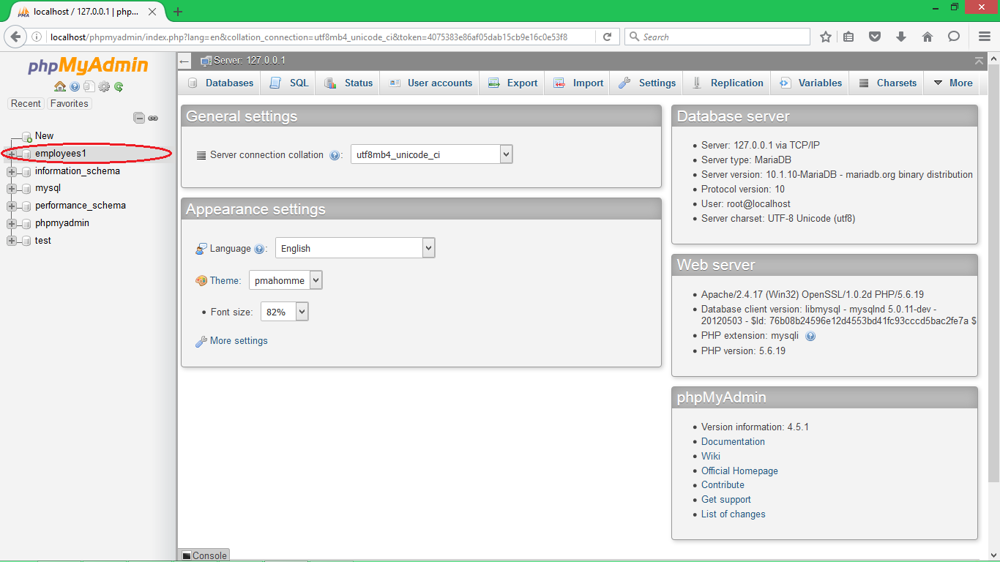
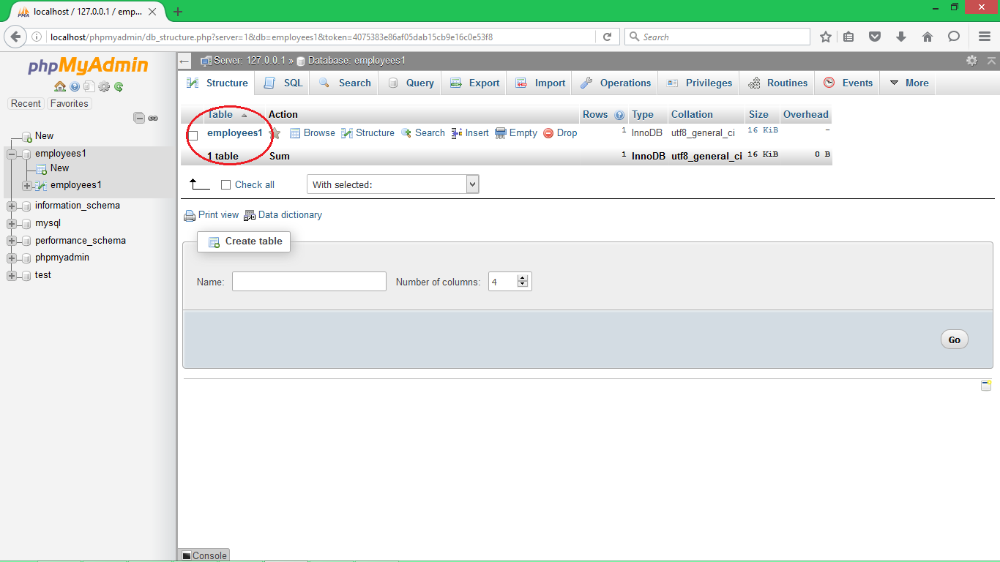
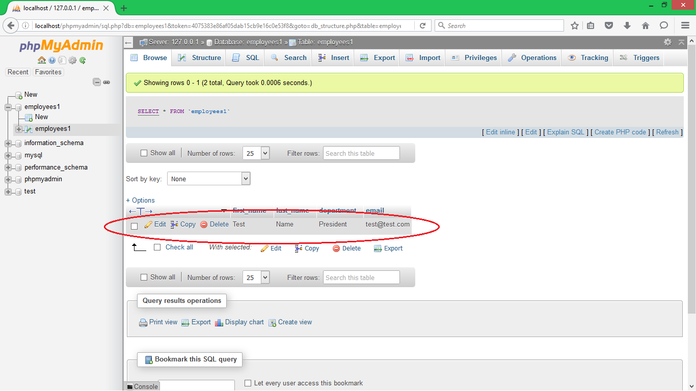

-

- Home
- GitHub 101
- Code Learning
- Programming Languages
- Service Enterprise Model
- Bootstrap Websites
- Fundraising Platforms
- Developer Roles
- Open Source Licenses
- Types of Coding Events
- Email Services
- Social Media
- Video Services
- Copyright Free Images
- Google Analytics
- Salesforce
- Confluence
- JIRA
- Cloud Deploy Services
- Website Hosting
- Content Management Websites
- WSYIWYG Editing Websites
- Databases
- SEO
- Mobile Development
- Coding for Accessibility
- Survey Tools
- Create a Project Doc
- Volunteer Websites
- Prototyping Tools
- Marketing Tools
- Nonprofit Types
- Try This!
- Deep Datta

Try This!
On this page, we offer some basic tutorials on incorporating various open source Web technologies into your nonprofit's online presence.
Try This #1: Create a MySQL Database Using MAMP
MacOSX users can create MySQL databases for use with dynamic Web content using MAMP, a well-known platform stack software bundle for use with MacOSX. (MAMP stands for "MacOSX, Apache, MySQL, PHP/Perl/Python"). For a quick tutorial on MySQL database creation using MAMP, watch the following video:
Try This #2: Create an HTML Form To Submit Data to a MySQL Database
For this tutorial, we're going to set up a basic MySQL database system where you can submit data using HTML/PHP.
You will need to install XAMPP, a free open source PHP development framework available for Windows, Linux, and MacOSX. I will be using XAMPP for Windows for the purposes of this tutorial. You can download and install XAMPP by going to https://www.apachefriends.org/index.html.
We'll proceed with this tutorial under the assumption that you are using XAMPP 1.7.3, but installing and operating the software is very similar for all releases. Just make sure you have Apache, MySQL, PHP, and PHPAdmin installed at the very minimum.

Start your XAMPP control panel, and then start the Apache and MySQL services. In the photo above, we can see that the two services are running.

Next, open your browser and log on to "http://localhost/phpmyadmin" to open the PHPMyAdmin tool. Before we can use our MySQL PHP system, we must first set up the database itself.

The "MySQL localhost" section has a submit form for you to create a new database. We are going to make an employee records database, so underneath "Create new database," type in "employees1" and click the Create button. Unless you require specific field formatting/encoding options for your new database, you can just leave the other settings as is.

If the database creation was successful, you'll see the above graphic in your portal.

Next, we need to set up a table in our database. Click on the Database tab in your main portal. You will see a list of databases. We created a database named "employees1." Click on the "employees1"

You will see a box similar to this one asking you to designate the name of and number of fields in your table. For the name, enter "employees1" and for the number of fields, type "4" and hit "Go."

You will then see a box to set options for your data fields. Ordinarily, you would set an id field as your primary key (this would be akin to the unique employee records at an organization which are usually numbered). If you wished to do that, you can set the first field with the Name of "id," the Type of "INT," the Index of "PRIMARY," and the A_I (auto increment) checkbox set to "checked." For our purposes, we'll set the following fields like this:
- Field 1- Field: "first_name", Type: "VARCHAR", Length: "255"
- Field 2- Field: "last_name", Type: "VARCHAR", Length: "255"
- Field 3- Field: "department", Type: "VARCHAR", Length: "255"
- Field 4- Field: "email", Type: "VARCHAR", Length: "255", Index: "PRIMARY"
Once you've entered those values in for the fields, click the Save button to save your new table. Now you are ready to start using your database, so let's get to coding.
The first thing you want to do is navigate to the directory where XAMPP was saved when you installed the program. Open that directory, and then open the htdocs/ directory inside of it. Once you're in htdocs/, create a new directory named "addemp." Inside of there, we will create two PHP script files.
Open your favorite text-based editor and create two new files called "index.php" and "process.php." Save them both in your xampp/htdocs/addemp/ directory.
In your index.php file, we need to add code to make a text submission form. So go ahead and add the following code (resize the box as much as you need):
Next, we need to add code into our main database script, process.php. When the "Add Employee" button is clicked in index.php, the data submitted into the form will be added to our employees1 database table with an HTTP POST call. Put the following code into process.php (again, resize the box as much as you need):
Now that we have our code implemented, go ahead and test it out. Open up your browser and log on to "http://localhost/addemp/index.php." If you haven't already done so, make sure to start Apache and MySQL in XAMPP first.

You will have a screen that looks similar to this. You can fill out whatever you like in the fields. For test purposes, I'm adding a first name of "Test," a last name of "Name," a department of "President," and an email of "test@test.com." Once you've entered data, click "Add Employee."

If the database successfully added the data, you will see this screen.
Open up PHPMyAdmin and click on the database we've added (employees1) on the left pane. [It's highlighted for you for this demo screenshot.]
Next, click on the "employees1" table we added earlier.
If we were successful, our new data will appear in the table (as my test data appears here).
And there you have it. You have just made a MySQL database that can be populated with data using a HTML/PHP webform. This is a simple example that you can obviously tweak and tailor to your needs.
SOURCES CITED IN THIS TUTORIAL:
- https://www.eduonix.com/blog/web-programming-tutorials/learn-submit-html-data-mysql-database-using-php/
- http://html.net/tutorials/php/lesson18.php
- http://www.complete-concrete-concise.com/web-tools/creating-a-mysql-database-using-xampp
- http://devtuts.butlerccwebdev.net/testserver/using-xampp-control-panel.html
All Try This tutorial code is available on our community-playbook Github repo. You assume all responsibility and/or liability in using any or all of this code in your organization or enterprise. Always remember to abide by best coding practices and local regulations to keep your systems secure and operational. When in doubt, consult with your IT/developer staff or external sources like Stack Overflow.